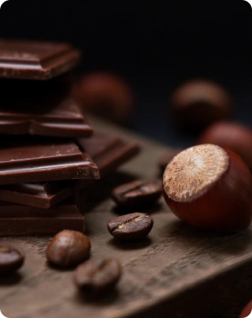
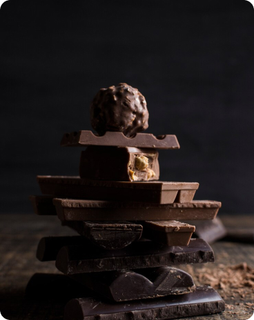

<!-- Eugene Zarivniy  -->
<section class="section">
  <div class="container">
    <h2 class="title">TOP <span class="title-span">SELLERS</span></h2>
    <ul class="img-list">
      <li class="img-item">
        
      </li>
      <li class="img-item">
        
      </li>
      <li class="img-item">
        
      </li>
    </ul>
    <div class="text-button">
      <p class="text">
        Crazy enough chocolate originates from a bean just like the coffee bean
        called Cacao. Cacao has been around for thousands of years and was first
        discovered by the Native American tribe called the Mayans.
      </p>
      <button class="button" type="button">Buy now</button>
    </div>
    <!-- Обрати внимание, что стили на контейнер и на класс title приходят из файла стилей general.css  -->
    <!-- Тебе нужно просто продолжать свой код html в этом контейнере -->
    <!-- Класс section не убирай, я на него закинул общие падинги для секций. Если тебе нужно задать стили на секцию, задай дополнительный класс -->
    <!-- Перед началом работы, ознакомься, пожалуйста с файлами general.css u reset.css. В файле general я прописал общие падинги для секций. Если у твоей секции нет общих отступов, то значит, яз аписал их в твоём личном файле css -->
    <!-- Я создал заголовок h2 и указал ему класс title и на спан title-span, чтобі Вы поняли, откуда, какие стили приходят. h2 это у нас заголовки секций, если в твоей секции нет этого заголовка по макету, то просто удали его, значит он тебе просто напросто не нужен -->
    <!-- Общие сбросы для заголовков, списков и так далее   приходят с файла reset.css, поэтому тебе не нужно делать контейнер и общие сбросы -->
    <!-- Цвет заголовка Томато приходит из твоего файла css, где ты будешь работать -->
    <!-- Если я забыл указать какой-то общий сброс или есть идея по поводу общей переменной в руте - сообщи мне. Удачи =) -->
  </div>
</section>
